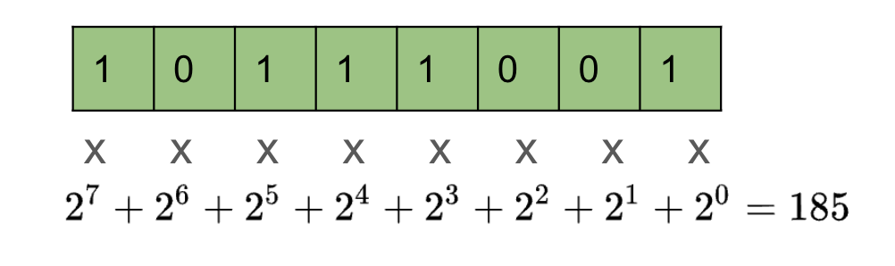
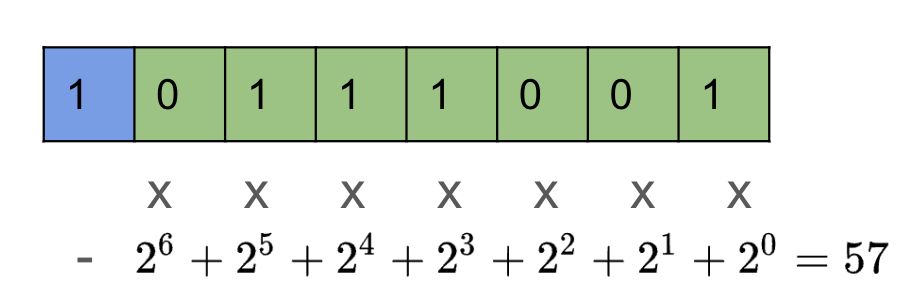
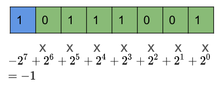
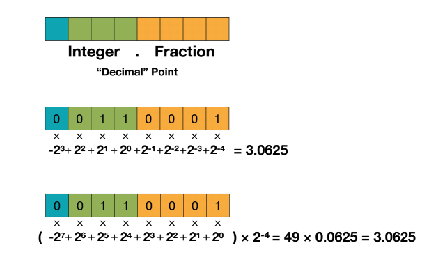
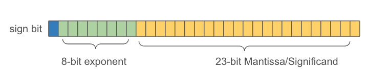
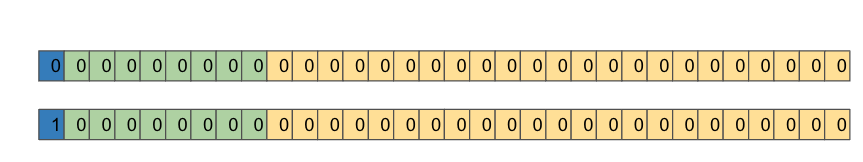
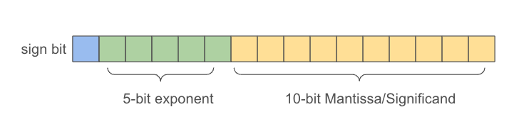
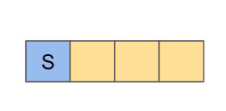
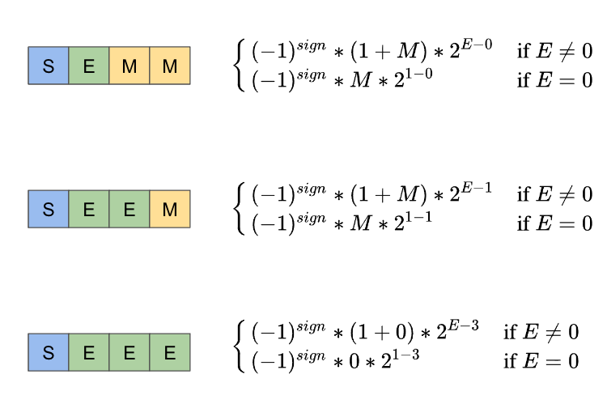

Numeric Data Representation in Modern Computer System
Integer, fix-point number, floating-point number
This is a summary of MIT6.5940, lecture 5, data types part.
1. Integer
1.1 Unsigned Integer
For an N-bit unsigned integer, its range is $[0, 2^N - 1]$

1.2 Signed Integer
1.2.1 Sign-Magnitude Representation
For N-bit, the most left(highest) bit is a sign bit. Its range is $[-(2^{n-1}-1), 2^{n-1}-1]$
There are two ways to represent 0
- 10000000
- 00000000

1.2.2 Two’s Complement Representation
sign bit
- Most significant bit (MSB) is the sign bit.
- if MSB is 0, the number is positive or zero.
- if MSB is 1, the number is negative.
range(for N-bit)
- The min is where MSB is 1 and the rest is 0, which is $-2^{n-1}$.
- The max is where MSB is 0 and the rest is 1, which is $2^{n-1}-1$.
Two’s complement has only one representation for zero: 00000000.

Steps to obtain Two’s complement:
Positive Numbers:
- Represent the number in binary as usual.
Negative Numbers:
- Start with the binary representation of the absolute value.
- Invert all the bits (change 0s to 1s and 1s to 0s).
- Add 1 to the least significant bit (LSB).
For example:
Positive Number (e.g., +5):
- Convert +5 to binary: 0101
- The result is 0101, which is the binary representation in two’s complement.
Negative Number (e.g., -5):
- Convert 5 to binary: 0101
- Invert the bits: 1010
- Add 1: 1010 + 1 = 1011
- The result is 1011, which is the binary representation of -5 in two’s complement.
Two’s complement makes the arithmetic simpler and hardware implementation friendly.
1 | Addition of 4-bit Two's complement numbers |
2. Fixed-Point Number

source: https://www.dropbox.com/scl/fi/eos92o2fgys6gk0gizogl/lec05.pdf?rlkey=2hohvi8jcvjw3f8m8vugfa2mz&e=1&dl=0
Example with negative numbers.
1 | -5.5 |
3. Floating-Point Number
3.1 32-bit floating point number

The number it can represent:
$$
(-1)^{sign} \times (1 + mantissa) \times 2^{exponent-127}
$$
Q: How can we represent zero in 32-bit floating point number?
The equation above only applies to cases where exponent is not all zeros. If exponent is all zeros, then it follows another equation.
$$
(-1)^{sign} \times mantissa \times 2^{1-127}
$$
So, we have two ways to represent zero, where we let mantissa part to be 0.

3.2 Half Precision (FP16)

$$
(-1)^{sign} \times (1 + mantissa) \times 2^{exponent-15}
$$
4. INT4

Negative numbers are represented using Two’s complement.
Binary | Decimal
0000 -> 0
0001 -> 1
0010 -> 2
0011 -> 3
0100 -> 4
0101 -> 5
0110 -> 6
0111 -> 7
1000 -> -8
1001 -> -7
1010 -> -6
1011 -> -5
1100 -> -4
1101 -> -3
1110 -> -2
1111 -> -1
5. FP4

References
Numeric Data Representation in Modern Computer System
http://jchuzc.github.io/misc/misc-numeric-data-representation/